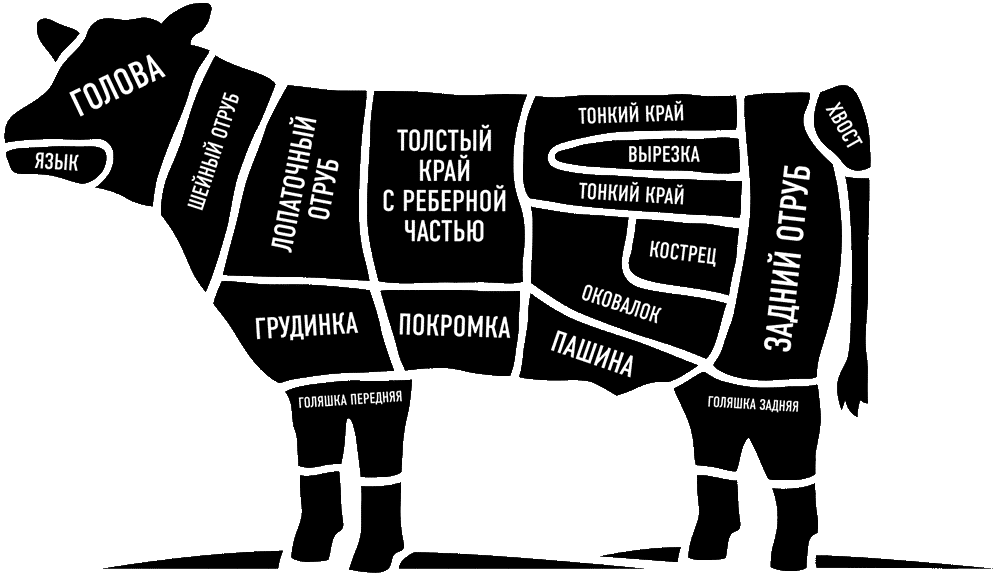

Выбор стейка — это искусство. Каждый кусок мяса имеет свои уникальные характеристики: вкус, текстуру, степень мраморности. Этот гид поможет вам разобраться в видах стейков и подобрать идеальный вариант для вашего стола.
Карта разделки туши
Наглядное изображение показывает, из какой части коровы получают каждый вид стейка


Рибай (Ribeye)
Рибай — король стейков. Этот стейк славится своей мраморностью и насыщенным говяжьим вкусом. Благодаря высокому содержанию жировых прожилок, стейк получается невероятно сочным и нежным при жарке.
Рекомендуемая прожарка

Стриплоин (Striploin / New York)
Стриплоин — классический американский стейк с ярким говяжьим вкусом и плотной текстурой. Менее мраморный, чем рибай, но не менее вкусный. Идеально подходит для тех, кто предпочитает более постное мясо с насыщенным вкусом.
Рекомендуемая прожарка

Филе-миньон (Tenderloin / Filet Mignon)
Вырезка — самая нежная часть туши. Этот стейк отличается особой мягкостью и практически не содержит жировых прожилок. Идеальный выбор для гурманов, ценящих нежность и деликатный вкус.
Рекомендуемая прожарка

Т-Бон (T-Bone)
Т-Бон — уникальный стейк, объединяющий в себе два вида мяса: нежную вырезку и насыщенный стриплоин, разделённые Т-образной костью. Отличный выбор для тех, кто хочет попробовать два вкуса в одном стейке.
Рекомендуемая прожарка

Портерхаус (Porterhouse)
Портерхаус — «старший брат» Т-Бона. Имеет большую часть вырезки и более насыщенный вкус стриплоина. Идеален для больших порций и тех, кто любит сочетание разных текстур мяса.
Рекомендуемая прожарка

Фланк (Flank)
Фланк — плотный, насыщенный стейк с ярко выраженным говяжьим вкусом. Имеет более грубую текстуру волокон, поэтому важно правильно его нарезать — против волокон. Отлично подходит для маринования.
Рекомендуемая прожарка

Чак (Chuck)
Чак — отличный выбор для тушения и приготовления на низкой температуре. Имеет насыщенный говяжий вкус, но более жесткую текстуру. При длительной готовке становится невероятно мягким и сочным.
Рекомендуемая прожарка

Брискет (Brisket)
Брискет — классический стейк для копчения и длительного тушения. Имеет плотную текстуру и много соединительной ткани, которая при длительной готовке превращается в желатин, делая мясо невероятно нежным.
Рекомендуемая прожарка
Степени прожарки стейка
С кровью (Rare)
Внутри стейк практически сырой, красный. Температура: 52-55°C
~2 мин с каждой стороныСлабая (Medium Rare)
Внутри розовый с красным соком. Рекомендуемая степень для большинства стейков. Температура: 55-60°C
~3 мин с каждой стороныСредняя (Medium)
Внутри розовый, без красного сока. Температура: 60-65°C
~4 мин с каждой стороныПочти прожаренный (Medium Well)
Внутри слегка розовый. Температура: 65-70°C
~5 мин с каждой стороныХорошо прожаренный (Well Done)
Полностью прожарка без розового цвета. Температура: 70°C+
~6+ мин с каждой стороныСоветы по выбору стейка
Обратите внимание на мраморность
Чем больше жировых прожилок в мясе, тем сочнее и вкуснее будет стейк.
Цвет мяса
Качественная говядина должна быть ярко-красного цвета, без серого оттенка.
Запах
Свежее мясо не должно иметь неприятного запаха. Аромат должен быть приятным, мясным.
Выдержка
Выдержанное мясо (Dry Aged) имеет более концентрированный вкус и нежную текстуру.
Теперь вы готовы к выбору!
Используйте полученные знания, чтобы выбрать идеальный стейк для себя и своих близких.
Перейти в каталог